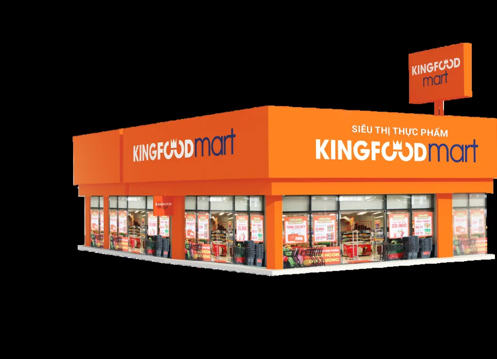
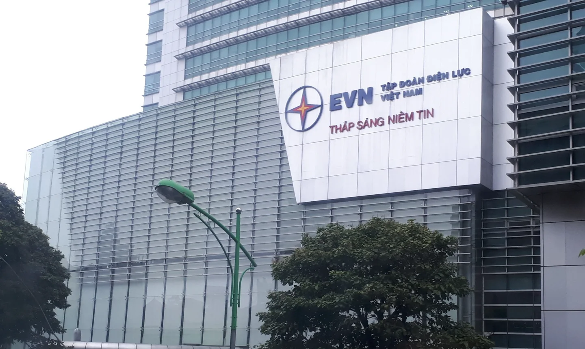
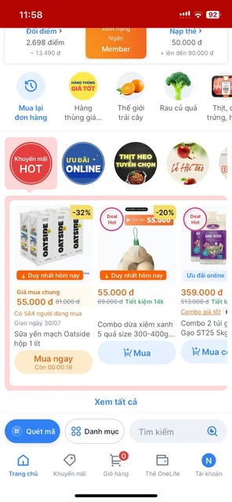
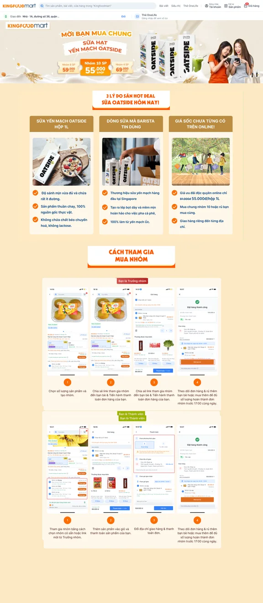
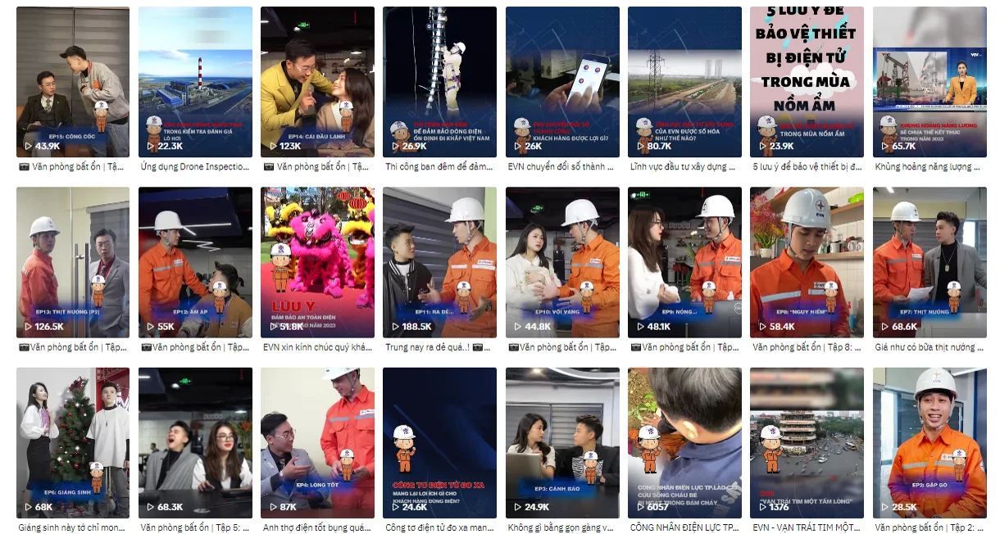

Retail · Growth & CRM
OneLife membership
Customer journeys, CRM and omnichannel campaigns for Kingfoodmart’s membership app.
Reported outcome 5,872 voucher orders
View OneLife workDigital marketing Growth CRM
Marketing & Growth Specialist
I work across customer journeys, CRM, content and digital campaigns—turning insight into clearer experiences and measurable growth.
Selected outcomes
Business outcomes, clearly labelled so targets and strategy are never confused with results.
200%
Revenue growth for the OneLife app within 10 months
Outcome · Seedcom Food role
2.57B
Reported revenue from mass voucher campaigns
5,872 voucher orders · OneLife CRM
+480%
Organic-search impressions
+320% organic clicks · OneLife SEO
Selected work
Work across retail, beauty and public-service communications. Each case explains the brief, my contribution and reported results where available.

Retail · Growth & CRM
Customer journeys, CRM and omnichannel campaigns for Kingfoodmart’s membership app.
Reported outcome 5,872 voucher orders
View OneLife workBeauty · TikTok
A TikTok-first content approach for a Vitamin C serum launch.
Reported campaign performance 100 videos · ~100M views
View Garnier work
Public service · Channel strategy
A channel strategy to make electricity information more useful and approachable on TikTok.
Planned content mix 70% series / 30% topical content
View EVN workWhat I work on
Selected work
Three cases, each with a different channel and business challenge. Results are shown only when they were reported in the source material.

01 · Retail, Growth & CRM
Helping Kingfoodmart connect membership, promotions and online grocery shopping.
02 · Beauty, KOL & TikTok
Planning creator-friendly TikTok content to introduce a Vitamin C serum to a younger audience.
03 · Public service, Content & Video
Making electricity knowledge easier to engage with for younger TikTok audiences.
Retail · Growth & CRM
Helping Kingfoodmart connect membership, promotions and online grocery shopping.
Context
OneLife gives Kingfoodmart customers access to tiered promotions, prepaid-wallet offers and more convenient online grocery shopping. The work focused on making that value clearer at every stage of the customer journey.
The challenge
The task was to connect in-store and digital touchpoints, encourage app engagement, and support conversion and retention without losing the practical value customers expect from grocery shopping.
I mapped customer journeys, planned owned-media activity, and used segmentation, content and testing to improve the route from discovery through loyalty.
My approach
Identified pain points and opportunities from awareness to loyalty, including user flows and in-app journeys.
Planned activity across landing pages, app push, Zalo OA, Zalo Groups and social media.
Used personalised deals, cart and reorder reminders, vouchers, content and product-description optimisation.
Reported outcomes
Figures below are outcomes reported in the supplied project material.
5,872
2.57B reported revenue and 763 churned customers reactivated.
1,804
3% average CTR, 5% average CVR and 120 peak orders per day.
+480%
+320% organic clicks, +25% conversion rate and 21% of keywords in Google’s Top 10.
540
Generated from 5,016 landing-page visits and 2,370 products sold.
Campaign activation
App push reached more than 200,000 users. Zalo OA communicated operational information to 12,000+ customers, while 50 supermarket-specific Zalo Groups delivered campaign messages to nearly 10,000 customers.

Beauty · KOL strategy & TikTok
Planning TikTok-native creator content to build product awareness and support trial.
The brief
The campaign needed to introduce Garnier’s Vitamin C serum to a younger audience in a way that felt social-first, credible and worth trying—not like a traditional product ad.
My contribution
Content directions
Natural wordplay to spark curiosity and introduce the product.
Duet and stitch content explaining key product benefits in a social-first format.
A TikTok review style designed to build trust and encourage trial.
Reported campaign performance
Approximately 100M reported hashtag views in the supplied campaign material.
~100Mviews
Public service · Channel strategy & content
A TikTok channel strategy for bringing electricity knowledge closer to younger audiences.
The challenge
Electricity-saving, digital-transformation and company-news topics can be difficult to understand and less engaging for younger TikTok users. The strategy needed a more recognisable, friendly way in.
My contribution
The idea
A consistent ambassador gave the channel a recognisable voice: expert, modern, friendly and familiar.

Planned content mix
This is a proposed programming mix from the strategy, not a performance result.
Experience
From growth and CRM in retail to research and paid media across FMCG, F&B and beauty.
Seedcom Food
Led 60+ growth-marketing campaigns for the OneLife app, combining customer personas, CRM, omnichannel communication and performance tracking.
MCV Group
Worked across FMCG, F&B and beauty campaigns, combining research, paid media and continuous testing.
About
I enjoy connecting research and creativity, then using performance data to make the next version stronger. I bring an inquisitive mind, initiative and a calm, practical way of working with teams.
Education
Working strengths
Contact
Have a role, project or idea to discuss? I’d love to hear about it.